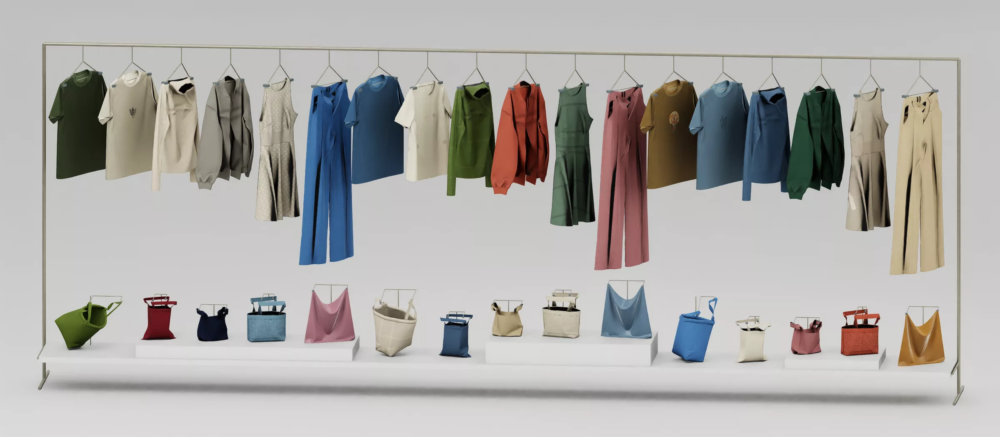

Six bimanual tasks across garments, silk and bags.
From long-horizon folding to carrying a loaded bag. Success is outcome-based: any behavior that reaches the target state earns credit.
Fold T-shirt
10,000 simulation-ready assets, each rebuilt from a seed.
Generative meshes are double-layered, fragmented and atlas-packed — unusable as cloth. We expand clean templates instead, varying geometry, appearance and physics one at a time.

Render materials and printed patterns.
Semantic regions deform; the rest pattern is rebuilt under seam-length constraints.
Density, thickness, anisotropic stretch, shear, bending, damping, friction.
Grasp, hold and release arise from contact forces alone.
No attachment rules, no adhesion, no filtered trajectories — so the score measures the policy, not the simulator. The same recorded dual-arm grasp is replayed at 15 placements, three times each; success requires grasp, hold and release.
Regularized friction always creeps. Anchored friction holds.
Released cloth stacks replace stick with a velocity ramp, so a grasp loaded to a fraction ρ of the Coulomb cone slides at v = ε(1 − √(1 − ρ)). Holding then needs an inflated μ — which locks fabric on the finger at release. Our anchored contact keeps v = 0 until ρ reaches 1.
Two controlled axes. One factor at a time.
On the flattening tasks, the configuration ladder changes only how the cloth starts; appearance variants change only color and texture. Asset, camera and placement stay matched, 50 fixed-seed episodes per cell.
Six policies, six tasks.
Policies break as the cloth starts more deformed — more than under any appearance shift.
On Flatten T-shirt every policy falls to 6–14% at C2, a drop of 58–78 points, versus 2–50 points under appearance shift. On Flatten silk no policy exceeds 2% at C2. Use the axis toggle above to switch task; click a policy to highlight it.
Hard in simulation, hard on the real robot.
π0.5 checkpoints trained only on simulated demonstrations are deployed zero-shot on the real dual-arm Piper, 20 trials per task, with the camera placed as in simulation.
task difficulty, sim vs. real